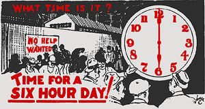

Chapter 3 - Some Proposed Tentative Demands
The Industrial Workers of the World Railroad Workers Industrial Union No. 520 unites all railroad workers from the section men upwards to dispatcher in order to secure protection and economic equality for all.
It is proposed that present contracts be suspended and brought up to date to meet modern requirements. Stream-lining and elimination of many out-dated rules, such as arbitrary rules, superfluous penalty and mileage classes will benefit the railroads, the public and shippers in many ways by faster and better train movements, also result in enormous annual savings through simplification of time-keeping, material and personnel.
Naturally we expect some of these savings to reflect in improved conditions and in our pay checks.
For over 32 years there has been no reduction of working hours or in the hours of service act.
SIX HOUR DAY
We will ask for a six-hour day for all workers and a 12-hour federal law. Straight rates to be asked for all classes of power, in all classes of service irrespective of size, weight, auxiliary devices or size of -cylinders. In other words, one rate for all power in all classes of service.
Twenty-one dollars ($21.00) for the daily rate for all workers plus $6.00 a day for away from home expenses to equal Government employees. A differential for night work, 6 P.M. to 6 A.M. Crews starting before 6 P.M. to be paid day rates until after 6 P.M. and at night rates for all time thereafter plus one and onehalf time after six hours at night rates.
Five days a week for all workers in all classes of service. Double time Sundays and Holidays.
All service on roads in Canada and Mexico to be counted in computing pension time, also provision for widows and minor children dependents of workers killed or dying in service or pensioned after death.
All workers to be entitled to at least two or more representatives or witnesses of their own choosing from any department or other source desired, to represent them at investigations.
All firemen to receive progressive examinations for promotions to engineers and to receive such examinations after three years service and to receive their dates on completion of final examinations and in no case to exceed five years from date entering service before final examinations are held.
TO MAKE IT POSSIBLE
Pool freight crews will perform such or any service required en route by yardmasters, station agents, dispatchers or other authority without penalty, except that road crews will not be required to perform yard switching at initial, intermediate or home terminal yards.
Road crews will make straight set-outs or pick-ups, hang cars while being filled out or cars taken off by yard engines, set out or spot stock or other cars, pick up on more than one track at any station except where yard engines are employed, fill other trains and lap back without penalty.
Abolish terminal miles, terminal delay and initial delay.
Elimination of mileage and mileage schedules in computing overtime. Straight time for H.A.F.T., commencing after the first eight hours from register to register in each 24-hour period and such time not to be run off. No aggregation of time against hours of service act to be permitted.
Thirty days' vacation with pay. After 20 years, pension at $75.00 a week.
Watch repair maintenance, cleaning, oiling and care of watches to be provided by the company.
All company business, examinations, coroners inquests, court witnesses, etc., to be paid at basic daily rate plus expenses.
BETTER CONDITIONS
Dormitories for road engine and train crews, with locker rooms, wash rooms, showers and toilet facilities. Spring beds to be provided. Sheet and blankets to be changed daily. All blankets to be sanitized and aired for each use. Beds to be rested and mattresses aired after each occupancy at least eight hours.
Dormitories built to meet building engineers' specifications and health and sanitation authorities. Buildings to be fire and damp proof. Buildings to be sound proofed, air conditioned and heat controlled.
All linen to be kept clean by the company at no charge to crews. Recreation facilities and reading tables provided, adjoining, adjacent or immediately near the dormitories. Restaurants to be located near and maintained by the company.
Work clothes, overalls, shirts, caps, gloves, shoes and etc. to be provided by the company at cost to employees. Uniforms and garments to be furnished by the company and kept clean and in repair.
A Federal train limit bill, in freight and passenger service. One thousand dollars ($1,000) to be paid dismissed employees for each year of service. Elimination of the blacklist system.
PRACTICAL PROCEDURE
Conditions peculiar to certain divisions or roads will be cared for by the rank and file of such divisions to meet conditions on such divisions and/or roads. All present existing conditions and schedules to be debated, voted on and sanctioned or ratified by rank and file of all roads in a general session before any action will be taken.
Local rulings to be handled by rank and file on each division. Here are a few thoughts to some of the problems to be met, fellow workers and we offer them only for your consideration of what we should and can have.
In the light of the past, many of these seem fantastic and radical, and they are, but, still they are within the realm of possibility, and we must adjust ourselves to radical changes if we are to put ourselves in our rightful place at the top and not the bottom as at present.
We are not unmindful that radical changes are sometimes fraught with danger and as each individual will be affected, we ask you to weigh and consider each contemplated change or revision, carefully and send your suggestions, opinions and advice, as each of you must vote for or against and aid in revising schedules and rules.
Mileage must not be considered, as mileage will not buy anything, we must reckon in terms of money. Seniority will remain unaffected. Some older men may not agree because over-miles or over-time under old schedules that now pad their checks higher than the majority will be pared down under the new, on a par with all workers. Seniority entitles a worker to a more desirable job but not more pay.
The argument that his seniority is being curtailed because he cannot hog more money than his fellow workers is a selfish one and will not hold water.
Condition of engines and all equipment to be maintained and kept within Federal requirements.
Supervisory officials such as road foremen of engines and their assistants; train masters and aids, assistant trainmasters, engine instructors and heads of shop, yard and office force, will be selected and appointed from and by the rank and file according to their proficiency and ability.
SUNDAY, HOLIDAY AND NIGHT WORK
In their argument before the emergency fact-finding board, engineers, firemen and switchmen testified for a rules proposal to provide time-and-a-half pay for Sunday and holiday work. Such overtime pay for work on Sundays and holidays is now accepted in many other industries but not on the railroads.
ACCIDENTS GREATER AT NIGHT
For night work between 6:00 p.m. and 6:00 a.m., with its extra hazards and difficulties the Railroad Workers Industrial Union No. 520 is seeking an additional 25 per cent an hour as a night differential. Such a differential is an established principle in many other industries.
Accidents to rail men working at night average 68% greater than during the day. Yet the workers have had no extra compensation for the special hardships and risks of night work.
WE ALL GET OLD
All the wealth of the world is produced by its workers. It would seem quite reasonable then that when these workers are too old to produce any longer, that they should be supported in decency and comfort out of the wealth they have produced in a lifetime of toil for the employers. But the pension law says that if workers want any security in their old age, they must pay for it by depriving themselves of part of their already inadequate wages through a whole lifetime!
When a horse gets too old to work, if he has a decent master, he is put out to spend his declining years in peace on the master's pastures. But what would you think of a master who during the productive years of the horses's life, took a handful of oats out of the horses's manger each day on the pretext that this was needed to support the horse in his old age? Yet this is the principle on which the present pension law is based.
The horse is just a dumb beast, but we think any horse of average intelligence would see to it that a master who tried such a shabby trick got a swift kick in the pants every time he reached into the manger for the "old-age deduction". Our brilliant Railway Labor Executives however just nicker contentedly and nuzzle the master's hand.
LOOK AT THE CHECK STUB
From the check stubs of an engine foreman for February, 1948 we take the following figures for earnings and deductions:
| First half | Second half | |
| Earn . . . . . . . . . | 132.12 | 132.96 |
| Fed. Tax. . . . . . . | 15.00 | 19.30 |
| Ret. Tax. . . . . . . | 7.60 | 7.65 |
| Hospitalization. . | 2.75 | No hosp. deduction |
| ——Total. . . . . . . . . | 100.77 | 106.01 |
NOTE: Check on second half is larger amount than first half although $2.75 is deducted for hospital, because yard crew worked twenty-five minutes overtime, which cost employees four dollars and thirty cents. Members of Railroad Workers Industrial Union 520 are opposed to any deductions made by Railroad Company.
The Retirement Board requires Railroad Companies to deduct $17.25 per $300,000 in anyone month from employee earnings. Yet thousands of Railway employees complain deductions run from 20 to 60 cents over the maximum amount required by law.
Most railroads deduct from $3.75 to $4.00 each month for hospital fees, and only one person eligible for treatment or hospitalization regardless of the number of members in an employee's family. Many corporations grant their employees and family free medical treatment and hospitalization. We also demand the same freedom.
SALARY AND PENSION COMPARISONS
 The average pension for retired Railroad Workers is about $70.00 a month, or $840.00 a year, many less and a few more. Compare this with retired Railroad Officials.
The average pension for retired Railroad Workers is about $70.00 a month, or $840.00 a year, many less and a few more. Compare this with retired Railroad Officials.
Retired Chairmen, President, Vice-Presidents, Solicitors, etc., receive a pension ranging from $10,000 to $35,000 per year on ten leading railroads. (See Railroad Notes, April 1948)
Now figure up your average weekly pay and your average per year and compare it with the salaries of Railroad Officials, which range all the way from $50,000 to $110,000, the latter amount was paid by the Pennsylvania Railroad System to its President M. W. Clement in 1945.
This gave Clement $2,115 a week, outside of other compensation from the railroads, or more than 45 times the average weekly wage of railroad workers that year.
You railroad workers who actually operate the railroads and keep them in repair, make it possible, through your low wages, for these railroad executives to draw their high salaries and live off the fat of the land.
It is no wonder that they try to keep you down.
No Congressman protests against pensions for well paid generals or politicians or their widows. Which serves the world best, its railroad workers or its politicians and generals?
The bells of human progress ring. We should no longer be content with an occasional dime more an hour; we should aim at no less than plenty for all of us. When we get off our knees our masters won't look so tall. And we should organize right while some still chortle that "good times are here again" and before we see again those bigger and better flophouses, bigger and poorer old clothes sales. bigger and poorer souplines. Or have you forgotten 1930 and the women and children living in hobo jungles?